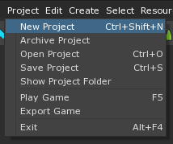
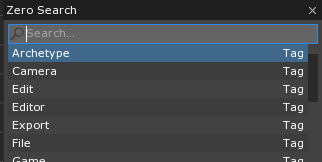
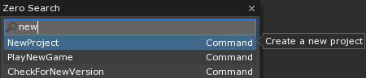
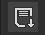

Executing Commands
Commands can be run in four ways
Use Menus
- Click on top level menu entry on the menu bar

- Then click on the desired command entry

- Menus options will be referred to like this
Use the Search Window
- Click on the Zero Search button located at the top left corner of the editor:
- Or Press
Spacein the main window - Or From any window press
Ctrl+Shift+Space
- The Zero Search Window will appear:

Zero Search Window, often abbreviated to just “Search Window”
- Type the command name into the text box
- Command names will be referred to like this
NewProject

Keyboard Shortcuts
- Displayed in the menu bar is the keyboard shortcut for the command. This key sequence
can be pressed to activate the command without using the menu. For example
Save Projectcan be accessed withCtrl+S - Keyboard shortcuts will be referred to like this
Ctrl+O
Tool Bar Icons
- Locate the toolbar located at the top of the editor
- Press the button for the desired command.
